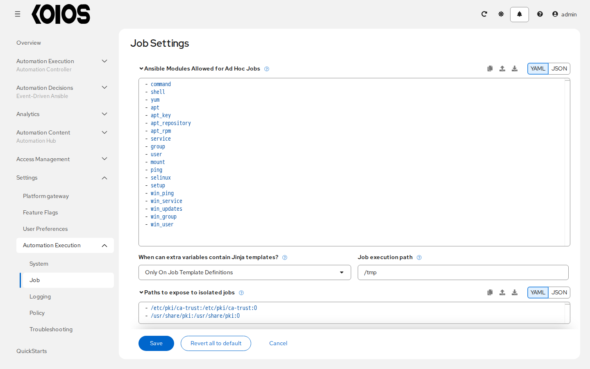
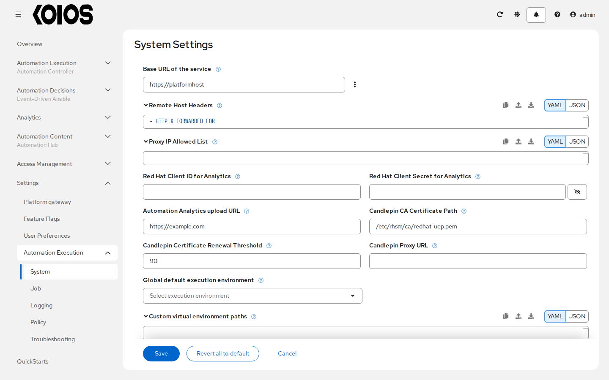
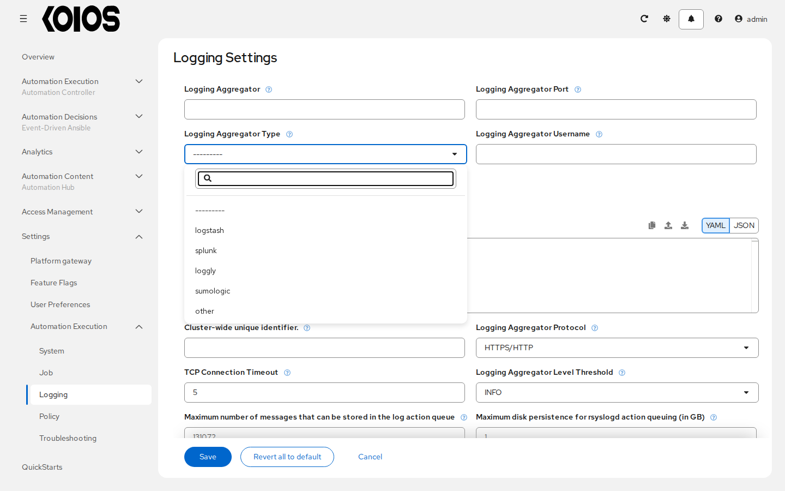
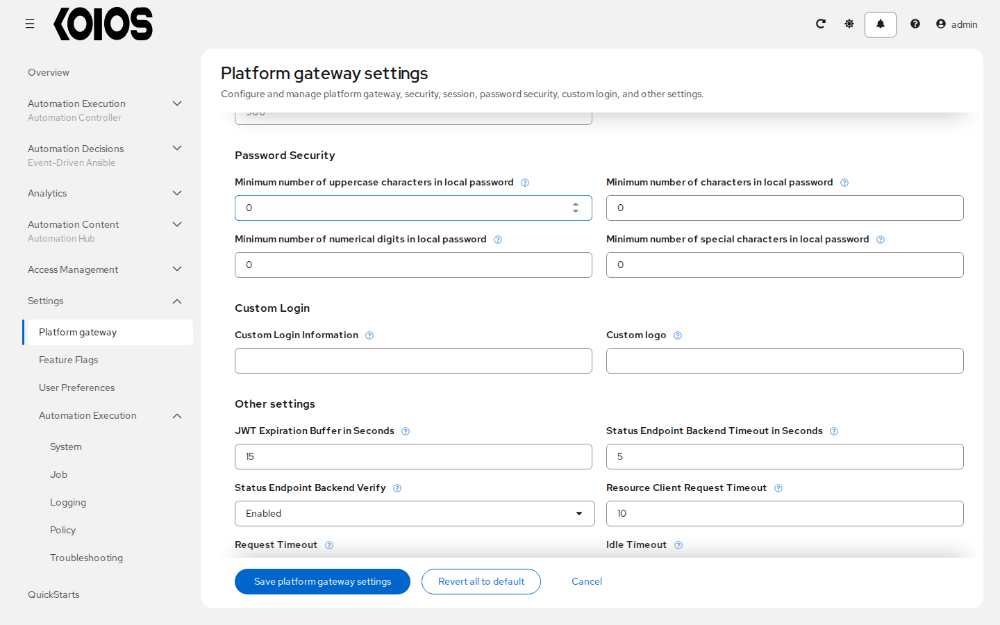
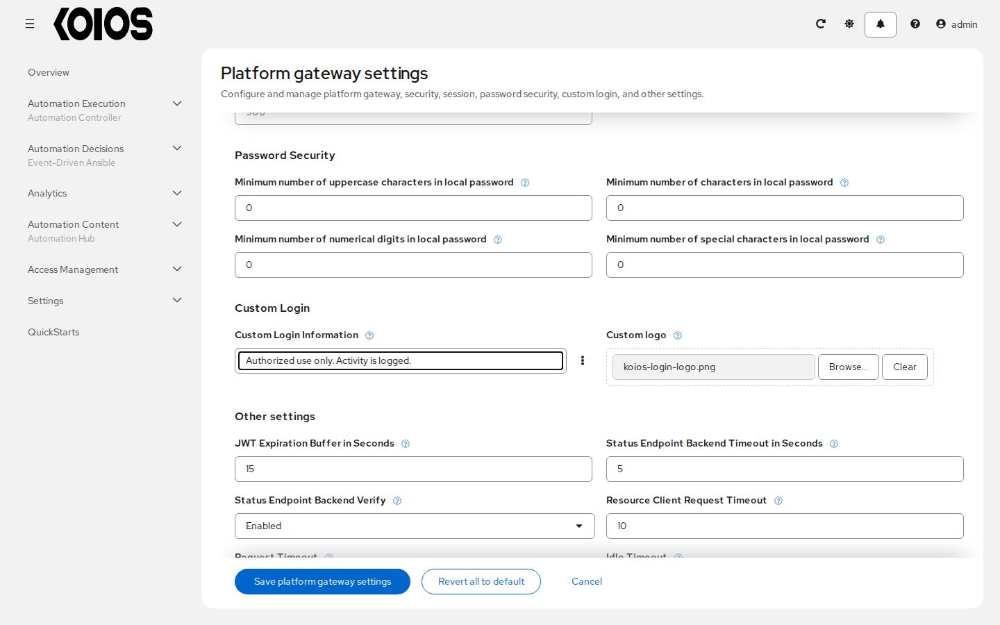
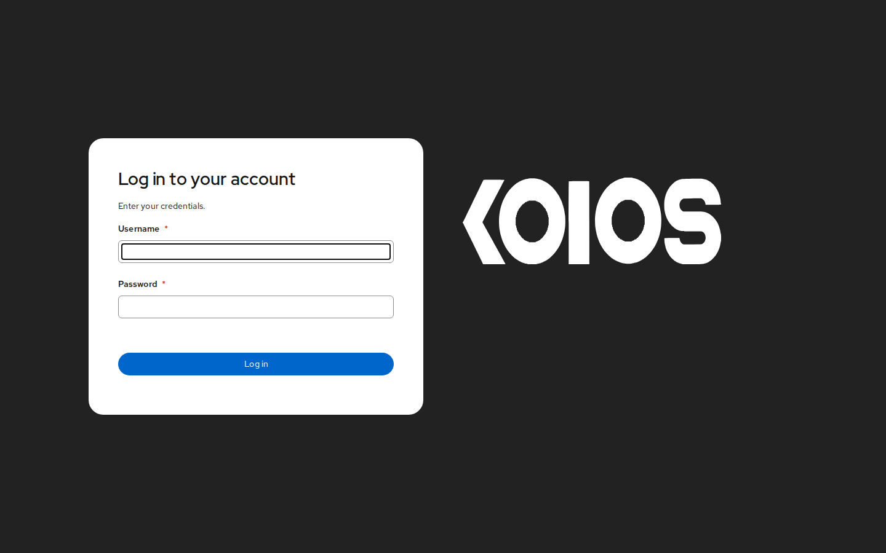

20. Automation Controller Configuration
Koios Automation Platform separates service settings from deployment configuration. Use Settings > Automation Execution for controller settings, Settings > Platform gateway for gateway settings, and the KoiosPlatform custom resource for deployment configuration. Authentication providers and mappings belong to the gateway; see Authentication methods.

Open a controller settings page and click Edit. Change the fields you need, then click Save to return to its details page, or Cancel to discard the edits. Boolean settings are check boxes. Field help explains the accepted values and units.
Fields that support resetting have a reset control. Revert all to default opens a confirmation dialog for a broader reset; it is not limited to the field you are editing. Review its scope before confirming with Revert all.
Settings supplied by the operator as deployment settings are read-only in the API and UI. Change them in the KoiosPlatform instead of editing files in a pod. See Deployment-managed settings and KoiosPlatform.
20.1. Authentication
Users log in through the platform gateway, which handles authentication across services. Configure authentication under Access Management > Authentication Methods; see Authentication methods. Session and gateway security settings are under Settings > Platform gateway; see Sessions and passwords.
20.2. Job Settings
Open Settings > Automation Execution > Job and click Edit. This page includes controller job defaults, allowed ad hoc modules, job timeouts, Galaxy access, and execution isolation settings. Available fields depend on the settings exposed by the controller API.

Use the help text for each field rather than assuming all numeric fields have the same unit. For Galaxy configuration, see Ansible Galaxy Support; for execution environments, see Execution Environments. Click Save to apply the changes.
20.3. System Settings
Open Settings > Automation Execution > System and click Edit. This page includes Base URL of the service, activity stream settings, user visibility settings, and the default execution environment.
Verify Base URL of the service (TOWER_URL_BASE) against the public platform URL so notification links point to the address users can reach. Changing this setting does not change the gateway Route, Ingress or TLS configuration; configure those through the KoiosPlatform.

Logging, Policy and Troubleshooting are separate pages under Settings > Automation Execution. For external logging, open Logging; see Logging and Aggregation.

Controller token and authentication settings do not configure platform gateway tokens or sign-in. For platform tokens, see API tokens and OAuth applications.
20.4. User Interface
Koios Automation Platform supports a custom logo and notice on the platform gateway login page. The application header and browser title retain the platform branding; there are no Custom Header Logo or Custom Browser Title settings in the current platform UI.
20.4.1. Configure the login page
As a platform administrator, open Settings > Platform gateway.
Click Edit platform gateway settings and find Custom Login.
Upload an image in Custom logo (
custom_logo) and enter a notice in Custom Login Information (custom_login_info), as needed.Click Save platform gateway settings.

The gateway settings API is /api/gateway/v1/settings/all/. Controller settings such as CUSTOM_LOGO and CUSTOM_LOGIN_INFO do not configure the platform login page.
20.4.2. Custom login logo
Upload a GIF, PNG or JPEG file: Browse opens a file selector, or drag the file onto the field. The form stores it as a base64 data URL (data:image/png;base64,<encoded image>), which is the value to supply when you configure custom_logo through the gateway settings API. SVG is not supported by this setting. The platform login page displays the custom image at a height of 64 pixels; choose its proportions accordingly.

Open the login page in a separate signed-out browser session to check the result. Check the image in both light and dark themes.
20.4.3. Custom login information
Custom Login Information adds text to the login form, such as a legal notice. The login component sanitizes the content before rendering it as HTML. Use plain text or simple HTML and verify the result on the login page; do not rely on scripts or unsupported markup.
20.4.4. Restore the default login page
Click Clear in Custom logo and empty Custom Login Information (custom_login_info) in Settings > Platform gateway, then click Save platform gateway settings. An empty logo value restores the default platform login logo, and an empty notice removes the custom text. Reload the signed-out login page to check the result.
Revert all to default resets gateway settings beyond branding, so avoid it when you only intend to remove a logo or notice.
